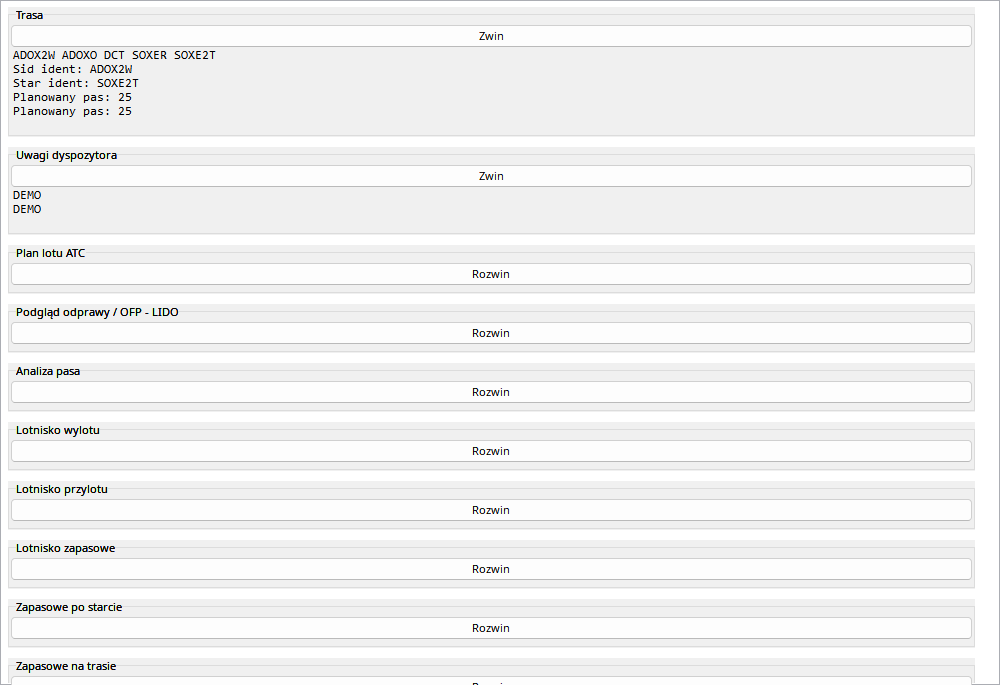
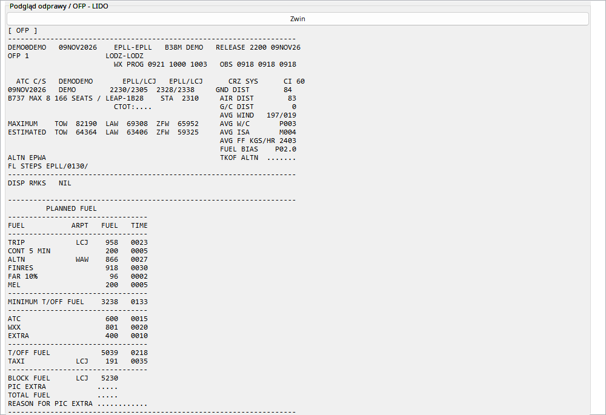

Plan w podrêczniku to zanonimizowany przyk³ad pêtli EPLL–EPLL. Numer lotu i rejestracja s¹ demonstracyjne; dane konta, za³ogi oraz osobiste odnoœniki nie s¹ czêœci¹ przyk³adu. Obliczenia OFP s¹ planem, nie pomiarem zu¿ycia, prêdkoœci lub masy z telemetrii.
Sekcje briefingu rozwijaj osobno. W d³ugim OFP kó³ko myszy przewija kontener tak¿e nad tekstem monospace. Mapy briefingu s¹ zapisywane jako obrazy przy locie, dziêki czemu póŸniejszy podgl¹d nie wymaga aktywnego linku do GIF. Nie ma akcji zg³aszania starego planu do VATSIM ani innych sieci. Przed przypisaniem planu do nagrania porównaj lotniska, samolot i czas — ostatni plan na koncie mo¿e dotyczyæ innego lotu.
SimBrief jest Ÿród³em planu/briefingu, nie pomiarem telemetrii. Import wymaga identyfikatora konta i sieci.
| Opcja / czynnoœæ | Dzia³anie i ograniczenia |
|---|---|
| Import | Pobierz OFP kontrolkami SimBrief i sprawdŸ samolot, trasê i planowany czas przed przypisaniem do lotu. |
| OFP | Tekst natywny monospace tylko do odczytu. Kó³ko przewija kontener briefingu tak¿e nad tekstem OFP. |
| Mapy | Dostêpne mapy s¹ pobierane do nagrania, zamiast pozostawaæ linkami GIF. Zapisana mapa nie wymaga póŸniej aktywnego adresu zdalnego. |
| Porównanie | Planowana masa, paliwo i wiatr nie s¹ danymi rzeczywistymi. Nazwy planu mog¹ pomóc przy punktach GPS EFB z innym AIRAC. |
| Bez zg³aszania | Otwarcie starego OFP nie zg³asza planu do VATSIM ani innej sieci; nie ma takiej akcji dla historycznych planów. |

